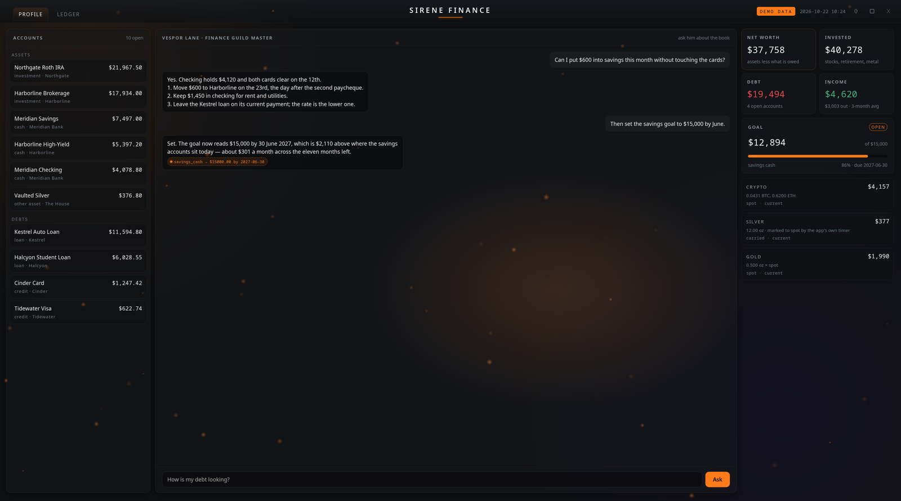
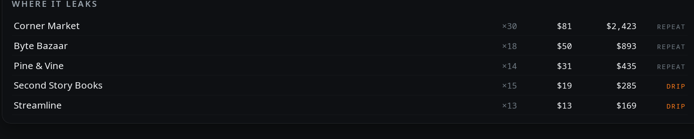

Short, frequent notes on what we're building — the in-progress version. Longer writeups live on the blog.
sirene-finance
Rebuilt the face of Sirene Finance, the desktop ledger. The layout is now relative to the screen instead of capped at a fixed width: the columns are proportions of the viewport, the type scales with it, and the window fills whatever it is given. On top of that, ember glass — translucent panels over a slow drift of light, and an orange glow that follows the pointer across each card, with a field of particles that leans toward it.

The profile view. Sample figures — no real accounts appear in this image.The ember following the pointer: the glass lights where it is touched, and the particles lean after it. Ten seconds, looped.The ledger view: thirteen months of rows, filters, and a panel that names the merchants taking the money. Sample figures.Detail, at native size: the goal bar and the three holdings panels. Crypto is priced from a local spot file; the silver figure is the carried account, cross-checked against spot.

Detail, at native size: where the money leaks. Bills and income are excluded; what remains is the discretionary repeat. Cheap ones are marked DRIP.
The Guild Master can also be told to change things now. Ask him to set a savings goal and the goal changes in the application, not just in the answer.
cardinal
Shipped v0.6.9 of cardinal, the desktop overlay: a new notification system with an ember-inspired face — a grey slab, a solid orange frame with an orbiting beam of light, and drifting embers.
The ember face: a grey slab with a solid orange frame, an orbiting beam of light, and drifting embers.The orbiting beam and embers in motion.